简介
本文是本人基于哈尔滨工业大学数据库系统整个课程的总结和复习提纲
绪论
2020年6月4日
9:15
数据库定义：
· 相互关联关系的数据的集合
Table:
· Table中描述了一批互有关联关系的数据。

数据库构成：
· 数据库（DB）：Database：一组关联关系数据集合
· 数据库管理系统（DBMS）：Database management system：管理数据的软件
· 数据库应用（DBAP）：Data base Application：完成某一功能的应用
· 数据库管理员（DBA）：Database Administrator：管理数据库的人
· 计算机基本系统

实例化和抽象化：
把数据库的构成实例化成各个具体的应用。
数据库管理系统的功能：（DBAP）
· 数据库定义：定义数据库中Table的名称、标题、标题内属性和属性值的要求
o DBMS提供DDL语言给用户定义数据库
o 用户使用DDL创建表格式
o DBMS解析DDL并执行
· 数据库执行：对表中数据库进行增删查改等操作
· 数据库控制：控制数据库数据的访问
o DBMS提供DCL语言给用户
o 用户使用DCL进行控制
o DBMS解析DCL
· 数据库维护：数据库转存，恢复，重组，性能监控
数据库语言：
· DDL：用于定义数据格式
· DML：数据库内容操作
· DCL：数据库控制语言
· 数据库各种操作执行。
DBMS功能：
· 语言编译器
· 查询优化
· 数据存储与索引
· 通讯控制
· 事物控制
· 故障恢复
· 安全性控制
· 完整性控制
数据库系统的标准结构
2020年6月4日
10:46
DBMS的三个层次：
· 外部层次（用户层次）：某一个用户能看到和处理的数据，全局数据的某一个部分
· 概念层次（逻辑层次）：从全局角度管理和理解数据
· 内部层次（物理层次）：存储在介质上的数据，存储路径、方式、索引等。
模式（schema）：
· 对数据库中的数据进行一种结构性描述
· 所观察到的结构信息
视图（view）：
· 某一种表现形式下的数据
外模式、外视图：用户所看到数据库的局部描述
概念模式、概念视图：从全局理解结构描述、关联约束
内模式、内视图：数据在介质上的结构描述，含有存储路径，存储方式，索引方式等。
两层映像：
· E-C Mapping**：**将外模式映射为概念模式，支持数据视图向外部视图转换，便于用户观察
· C-I Mapping**：**将概念模式映射成内模式，方便计算机的存储

逻辑数据独立性：当概念模式变化时，可以不改外部模式，只改EC mapping
物理数据独立性：当内部模式电话，可以不改概念模式，只改CI mapping
数据模型：模式 与 模式的结构
· 规定模式统一方式的模型
· 数据模型是对模式本身的抽象，模式是对数据本身结构形式的抽象
关系模型：所有的模式都可为抽象表的形式，而每一个具体的模式都拥有不同的列名的具体的表，这种表形式的数据有哪些操作和约束

模式：对数据的抽象
数据模型：对模式的抽象
三大经典数据模型：
· 关系模型：表的形式组织
· 层次模型：树的形式组织数据
· 网状模型：图的形式组织数据
第一代数据库：基于网状模型或者层次模型的数据库系
第二代数据库：基于关系模型的数据库系统
关系模型的简述
2020年6月4日
11:13
关系模型的构成：
· 描述DB各种数据的节本结构形式
· 描述Table与Table之间可能发生的操作（关系运算）
· 秒后苏这些操作所应该遵循的约束条件（完整性约束）
关系模型的三要素：
· 基本结构
· 基本操作：并、差、乘积、选择、投影、交、连接、除

· 完整性约束：实体完整性、参照完整性、用户自定义的完整性
关系代数：
· 基于集合的运算，一次一个集合
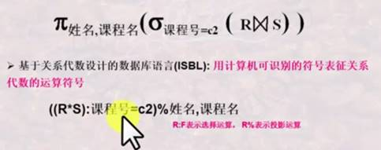
关系的定义：
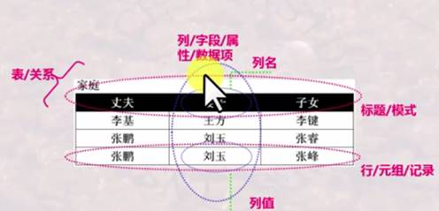
域：定义列的取值范围。
· 一组值的集合，拥有相同数据类型
· 集合中元素的个数成为基数
笛卡尔积：
· 一组域可能构成的全部的元素组合
· 笛卡尔积的每一个元素称为一个元组
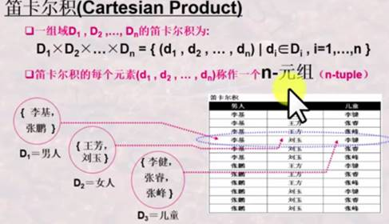
·
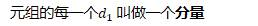
关系：
· 一组域的笛卡尔积的子集
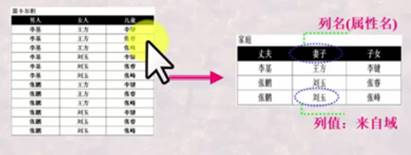
· 笛卡尔积中具有某一方面意义的那些元组被称为一个关系
· 由于关系的不同列可能来自同一个域，为了区分需要为每一个列起一个名字，该名字则为属性名
关系模式：
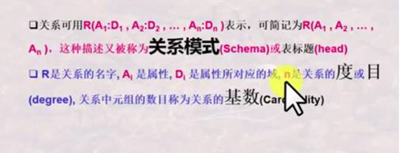
n：关系的度
基数：关系中元组的数目
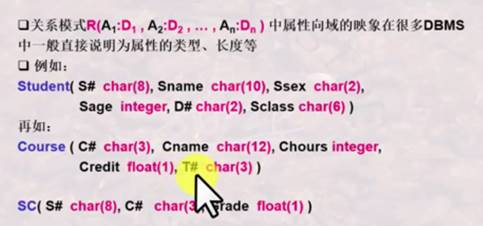
关系模式与关系：
· 同一关系模式下可以由多种关系
· 关系模式是关系的结构，关系是关系模式某一个时刻的数据
· 关系模式是稳定的，而关系是某一个时刻的值，是随时间变化的
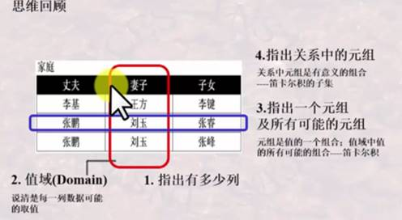
关系的特性：
· 列是同质的：每一列的分量来自统一域，是同一类型的数据
· 不同的列可以来自同一个域，所以需要为每一个属性赋予不同的属性名
· 关系是以内容来区分的，而不是属性在关系的位置来区分：行列互换无关性
· 关系中不能有两个相同的元素，但是在现实应用中，Table可能不能完全遵守此特性。
关系第一范式：
· 属性不可再分特性
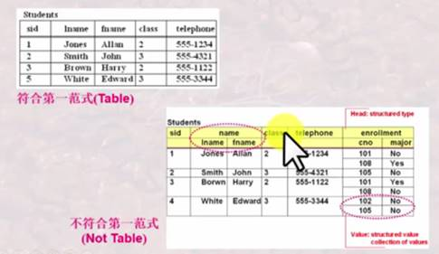
候选键：
· 关系中的一个属性组，其值能唯一标识一个元组，若工该属性组中去掉任何一个属性，它就不具有这个性质了，这样的属性组成为候选码（候选键）
· 关系中可能有多组候选码：（name, address）
主码：
· 当有多个候选码时，可以选定一个作为主码
· DBMS以主码为主要线索管理关系总的各个元组
主属性：
· 包含在任一候选码中的属性，被称为主属性，其他属性称为非主属性。
· 简单：候选码只包含一个属性
· 极端：所有属性构成主属性
外码：
· 关系R中的一个属性组，他不是R的候选码，但它与另一个关系S的候选码相对应，则称这个属性组为R的外码或外键
关系模型的完整性：
· 主码完整性：关系主码中的属性值不能为空值
o DBMS的结构保证
· 参照完整性：如果关系R1的外码与关系R2的主码相对应，则R1中的每一个元组的Fk值都等于R2中某一个元组的Pk值或者空
o DBMS的结构保证
· 用户自定义完整性：用户根据具体环境定义的完整性约束
o DBMS的支持用户自定义约束
关系代数
2020年6月4日
14:48
基于集合，提供了一系列的关系代数操作：并、差、笛卡尔积（广义积）
集合操作：并、交、差、笛卡尔积
纯关系操作：投影、选择、连接、除
五种基本操作：并、差、广义积、选择、投影
关系代数的基本操作
并相容性：
· 关系R和关系S存在相容性，当且仅当两个关系的对应属性域相同
并操作：
·
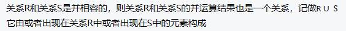
·
差运算：
·
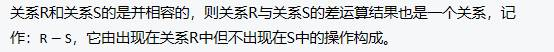
广义笛卡尔积：
·
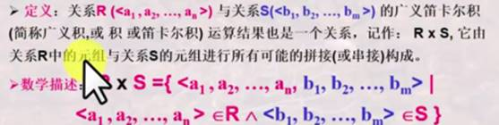
选择：
· 给定一个关系R，同时给定一个选择的条件condition，选择运算结果也是一个关系，他从关系R中选择出满足给定条件的元组构成。
·
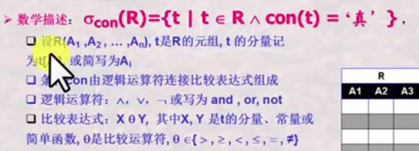
关系运算的优先级：
投影操作：
·
· 如果投影之后出现重复的元组，要去掉
投影操作选的是列，选择操作选定是行
交操作：
·
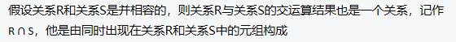
·
·
· t是关系R中的元组，s是关系S中的元组
· 属性A和属性B有可比性。
·
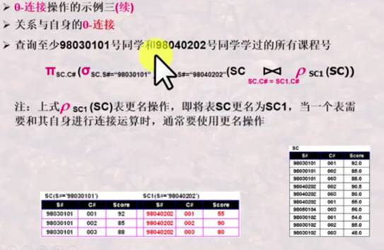
· 更名操作：自己和自己连接，用于需要在一个表上进行多个条件过滤操作的时候
等值连接：
·
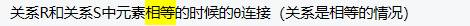
自然连接：
· 关系R和关系S的笛卡尔积中选取相同属性B上值相等的元组构成
·
· 两个关系肯定有相同的属性组B，所以是一种特殊的等值连接。所有的相同属性都必须相等。
· 在结果中去掉重复的属性列。**（会消除冗余）**
关系代数的基本思路：
· 检查是否涉及多个表，如果不涉及，则可以直接采用并、交、差、选择和投影
· 如果涉及多个表：
o 是否能使用自然连接
o 如果不能，则使用等值或者theta连接
o 如果还不能则使用广义笛卡尔积
· 连接完成之后，可以继续使用选择、投影等运算，即数据库的选投联操作
除运算：
· 用于求解：查询。。。。全部的/所有的
· 给定关系R和关系S，如果可以进行关系R与关系S的除运算，当且仅当：属性集S是属性R的真子集。
·
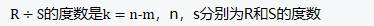
·
·
·
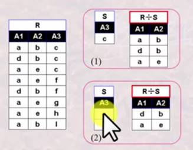
外连接：
· 两个关系R和S进行连接如果关系R或者S中的元组在另一个关系中找不到相匹配的元组，为了避免该元组信息丢失，从而将该元组与S或R中的假定存在的全为空值的元组进行连接，并放入关系结果中。
·
· 左外连接：自然连接+左侧失配
· 右外连接：自然连接+右侧失配
· 全外连接：自然连接+两侧表中失配的元组
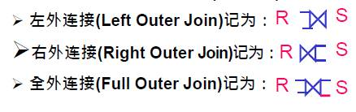
关系模型演算
2020年6月5日
10:39
关系元组演算：以元组变量作为谓词变量的基本对象
关系域演算：是以域变量作为谓词变量的基本对象
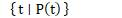
上式表示：所有使谓词P为真的元组t的集合
· t是元组变量
·
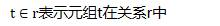
· t[A]表示元组t的分量，即t在属性A上的值
· P是与谓词逻辑相等的公式，P(t)表示以元组t为变量的公式
P(t)递归构造：
·
·
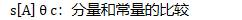
·
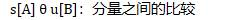
·
·
·
·
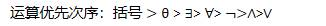
· 公式只限于以上形式
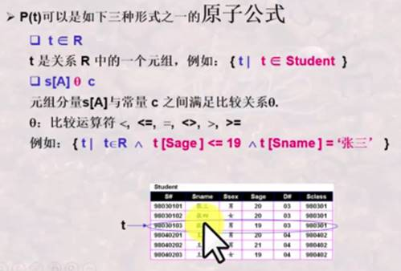
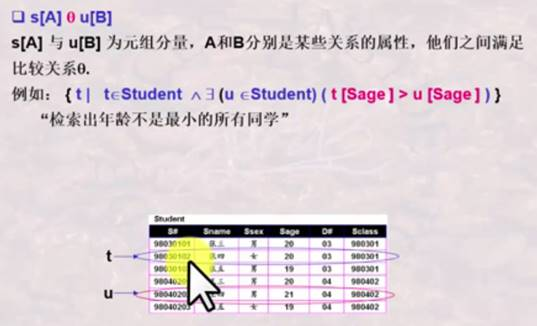
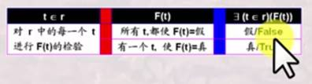
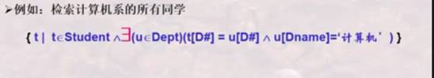
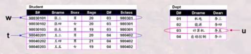
元组演算的等价性：
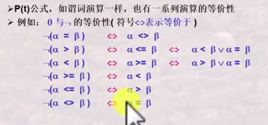
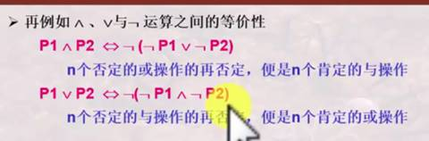
元组演算公式实现关系代数：
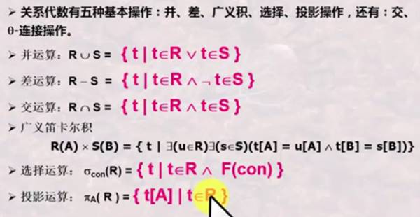
关系域演算：
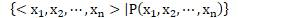
·
·
·
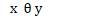
·
·
·
·
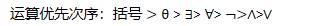
域是某一列的取值范围，元组则是一个具体的关系行
元组是一行行的扫描，域是以列为单位，对每一个列进行扫描
元组演算是以元组为变量，以元组为基本单位，先找到元组，然后再找到元组分量，进行谓词判断。
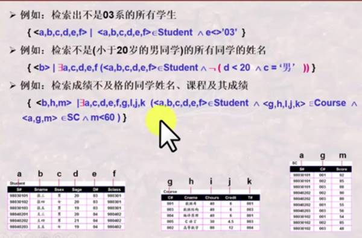
QBE操作框架：
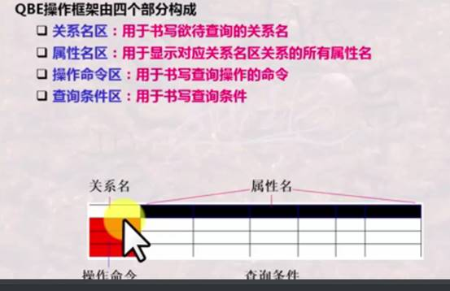
示例元素P，表示输出的集合标志，可以用.X,.Y来进行其子集的过滤
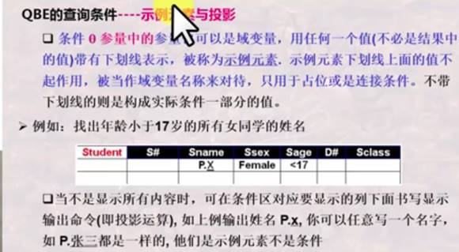
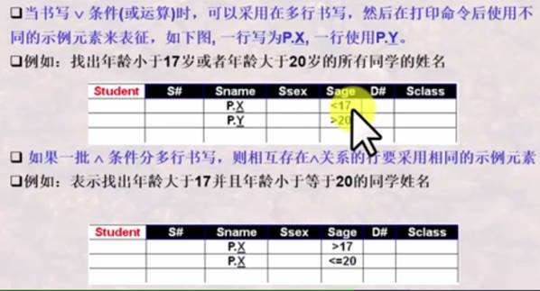
关系运算的安全性：不产生无限关系和无穷验证的运算被称为是安全的
\1. 关系代数是一种集合运算，是安全的
\2. 关系演算不一定是安全的
安全约束有限集合DOM：
·
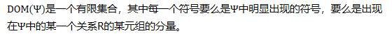
· DOM只是一个约束谓词的范围，不是最小集合。
安全元组演算表达式：
·
·
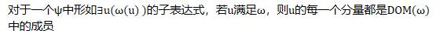
·
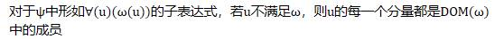
三种关系运算：
· 关系代数—以集合为对象的操作，集合到集合
· 元组演算—以元组为对象的操作，取出关系的每一个元组进行验证
· 域演算—以域变量为对象的操作思维，取出域的每一个变量进行验证看是否满足条件
· 三种运算是等价的
· 三种运算都是非过程性的：域>元组>关系
· 三种运算都是抽象的，但都是衡量数据库语言的完备性的基础
SQL语言概述
2020年6月5日
16:11
DDL:
· Create
· Alter
· Drop
DML:
· Insert
· Delete
· Update
· Select
DCL:
· Grant
· Revoke
交互式SQL->嵌入式SQL->动态SQL
理解查询需求->用SQL精确表示
创建数据库
Create database database name
创建Table：
Create table 表名（列名 数据类型 [Primary key|Unique] [Not null] [, 列名 数据类型 [Not null]])
· Primary Key：主键约束，一个表稚嫩给一个
· Unique：候选键约束，可以有多个
· Not null：非空约束，不允许为空
数据类型：
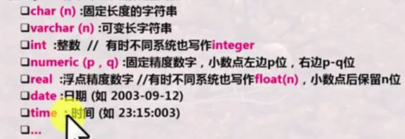
Insert：
Insert into 表名[(列名 [, 列名]…]
Values (值, [, 值],…)
Select:
Select 列名 [[, 列名]..]
from 表名
[where 条件
唯一性：
通过关键词DISTINCT保证结果的唯一性
排序问题：
使用order by 列名 [asc|desc]
模糊查询：
列名 [not] like “字符串”
· % 匹配零个或者多个字符
· _ 匹配单个字符
· \ 转义符
多表联合查询：
多表笛卡尔积
Select 列名 [[,列名]..]
From 表名1，表名2
Where 检索条件;
重名处理：
select 列名 as 列别名 [[, 列名 as 列别名]…]
from 表名 as 表别名1, 表名2 as 表别名2
Where 检索条件。
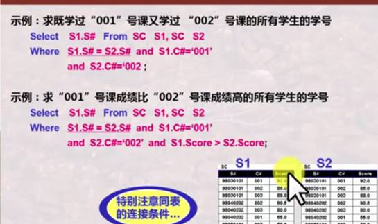
批量增加数据命令：
Insert into 表名[(列名 [, 列名]…]
子查询
Delete：
Delete from 表名 [where 条件]
Update:
Update 表名
Set 列名=表达式| (子查询)
[[, 列名=表达式|子查询]]
[where 条件表达式]
Alter：
Alter table tablename
[add {column datatype}]
[drop {约束}]
[modify {column datatype, ….]
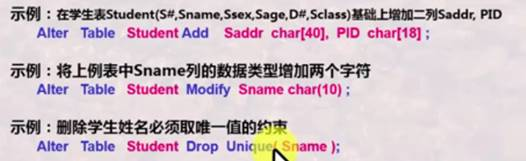
Drop：
Drop table 表名
Drop database 数据库名
SQL复杂查询
2020年6月8日
11:30
(not) in 子查询：
表达式 [not] in （子查询）
非相关子查询：内层查询和外层查询独立
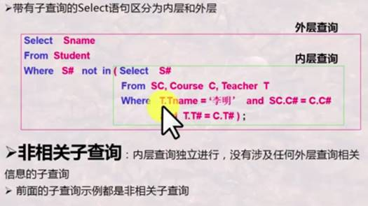
相关子查询：内层查询需要外层查询的变量
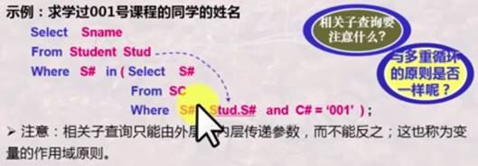
表示与“某一个”比较还是“所有”比较
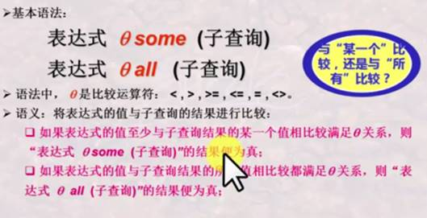
与Not in等价的是<> all
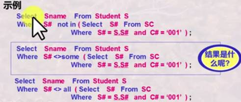
Exists子查询：
[not] Exists （子查询）
子查询结果中有无元组存在
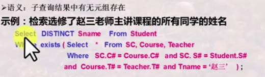
结果计算：
Select from where语句中，select子句后面不仅可以是列名，也可以是一些计算表达式或者聚集函数。
使用计算表达式作为一列
聚集函数：
SQL提供了五个作用在简单列值集合上的内置聚集函数，分别是：
COUNT、SUM、AVG、MAX、MIN
分组：
SQL可以将检索到的元组按照某一条件进行分类，具有相同条件值的元组划分到一个组合
或一个集合中。
Group by (…)
分组过滤：
若要对集合进行分组条件过滤，即满足条件的集合、分组留下，不满足的去掉。
Having 子句，又称为分组过滤子句，需要group by子句的支持。
对分组检查用Having子句，对每一行检查用where子句
union|intersect|except
(子查询) {union [ALL]| intersect [ALL] | exccept [ALL] 子查询}
默认自动删除重复元组，若要保留重复元组，则要带ALL
空值的处理
空值的检测： is [not] null
测试指定的列是否是空值。
· 空值不满足除了 is [not] null 之外任何查找条件
· 如果null 参与算数运算，则该算数表达式的值为null
· 如果null 参与比较运算，则结果可以视false
· 如果null参与聚集运算，那么除了count(*)之外的其他聚集函数都忽略null
连接运算：
连接类型：
· Inner join：
· Left outer join
· Right outer join
· Full outer join
连接条件：
· Natural：自然连接
· On <连接条件>：theta连接，满足on的的条件
· Using (col_1,col_2,… col_n)：col1-coln是两个连接关系的公共属性的子集，元组在col1-coln上的取值相等，且col1-coln只出现一次。
视图：
对应概念模式的数据在SQL中被称为基本表(Table)，而对应外模式的数据被称为视图(view),视图不仅包含外模式，而且包含其E-C映像。
Create view view_name [(列名 [, 列名]…)]
as 子查询 [with check option]
使用视图：
定义好视图，可以像table一样，在SQL各种语句中使用
视图的更新：
视图不保存数据，所以对视图的更新最终都要反映到对基本表的更新上，而有时视图的定义是不可逆的，比如使用聚集函数
· 包含聚集函数，不能更新
· 使用unique，distinct不能更新
· 使用group by 不能更新
· 使用计算表达式，不能更新
· 视图由单个表构成，但没有主键，不能更新
数据库完整性的概念及分类
2020年6月8日
16:37
数据库完整性：
是指DBMS应保证DB在任何情况下的正确性、有效性和一致性
· 广义完整性：语义完整性、并发控制、安全控制、DB故障恢复
· 狭义完整性：语义完整性、DBMS通常有专门的完整性管理机制与程序来处理语义完整性问题。
关系模型中的完整性要求：
· 实体完整性
· 参照完整性
· 用户自定义完整性
完整性约束条件：
O: 数据集合，约束的对象
P: 谓词条件，什么样的约束
A: 触发条件，什么时候检查
R: 响应动作，不满足的情况怎么办。
按约束对象分类：
· 域完整性约束条件
o 施加在某一列上，对给定列上所有要更新的某一后选值是否可以接受进行约束条件判断
· 关系完整性约束条件
o 施加在Table上，对给定的table上所有要更新的某一候选元组是否可以接受进行约束条件判断，或者是对一个关系中的若干元组和另一个关系中的若干元组之间的联系进行约束条件判断。
按约束来源分类：
· 结构约束：
o 来自于模型的约束，比如函数依赖约束，主键约束，外键约束
· 内容约束：
o 来自于用户的约束，如用户自定义完整性，关心元组或属性的取值范围。
按约束状态分类：
· 静态约束：
o 要求DB在任一时刻都应该满足约束
· 动态约束
o 要求DB从一个状态到另一状态时满足的约束
SQL语言的完整性：
· 静态约束：
o 列完整性：域完整性
o 表完整性：关系完整性约束
· 动态约束：
o 触发器
Create Table 定义完整性约束：
Col_constr列约束
Table_constr 表约束
check**中的条件可以是select-From-Where内任何的Where 后的语句，包含子查询**
列约束只涉及到一列，表约束涉及到多个列
撤销、增加约束：
断言：
· 断言是一个谓词表达式，它表达了希望数据库总能满足的条件
· 表约束和列约束就是一些特殊的断言
Create assertion
· 当一个断言创建后，系统将检查其有效性，并且在每一个更新中测试更新是否违反该断言。
触发器：
· 当某一事件发生的时候，对该事件产生的结果，检查条件，如果满足条件，则执行后面的程序段，条件或程序段中引用的变量可用coor_name_def
事件：Before| After {Insert|UPdate|Delete}
· 当一个事件发生之前或之后，after触发
· 操作发生，执行触发器操作需要处理的组值，更新之前或更新之后的值，这两个值由corr_name_def的使用来区分
Corr_name_def的定义：
数据库的安全性：
· 私人信息保护
· 信息公开和非公开
· 最小数据访问策略
· 数据安全级别
· 数据库系统的安全级别
DBMS的安全机制：
· 自主安全性控制：存取控制
o 权限在用户之间传递，使用户自主管理数据库安全性
· 强制安全性：
o 对用户进行强制分类，使得不同类别用户能够访问不同类别的数据
· 推断控制机制
o 防止通过历史信息，推断出不该被知道的信息
o 防止通过公开信息推断出私密信息
· 数据加密存储机制
数据库的自主安全控制：
· 自主安全性是通过授权机制来实现的
· DBMS允许用户自定义一些安全性控制规则
· 当有DB访问操作时，DBMS自动按照安全性控制规则进行检查，检查通过则允许访问，不通过则不允许。
AccessRule ::= (S, O, t, P)
· S: 请求主体
· O：访问对象
· t：访问权利
· P：谓词，
理解：S这个用户，对O这个访问对象，在P这个条件下，拥有t这个权利。
控制方法：
1. 存储矩阵：
2. 视图：
· 通过视图，可以限制用户对于关系中某些数据项的存取
· 通过视图，可以将数据访问对象与谓词结合起来，限制用户对关系中某些元组的存取。
· 在视图定义之后便成为了一个新的数据对象
· 视图可以定义条件P。
SQL的关系级别：
\1. select：读
\2. Modify：更新
\3. Create：创建
Grant {all PRIVILEGES| privilege, {privilege…}}
On [TABLE] tablename | viewname
To {public |user-id {, user-id…}}
[with GRANT Option]
· User-id: 用户账号，由DBA创建的合法账户
· Public：允许所有有效用户使用授权的权利
· Privilege：
· SELECT| INSERT| UPDATE| DELETE| ALL PRIVILEDGES
收回权力：
· Revoke {all privileges | priv {, priv}} on tablename |viewname FROM {public |user {, user…}}
自主安全性控制：
· 水平传播：授权者再授权
· 垂直传播：授权者传播给被授权者，再传播给另一个被授权用户
如果用户从多个用户处获得授权，则当其中某一个用户被收回权利时，该用户可能还存在其他用户授予的权利。
强制安全性机制：
· 强制安全性通过对数据对象进行安全性分级
· 从而实现不同级别用户访问不同级别数据的一种机制
访问规则：
· 用户s不能读取数据对象O，除非Level(S) >= Level(O)
· 用户s不能写数据对象，除非Level(S) <= Level(O) ：高级别用户不允许改低级别数据，如果高级别用户进行修改了，低级别用户就无法读取了。
安全性级别：
关系中的每一个元组都带有安全性的分级
嵌入式SQL语言
2020年6月16日
8:51
以下嵌入式SQL以C语言为例
变量的声明与使用：
Exec sql select Sname, Sage into :vSname, :vSage from Student where Sname=:specName
程序与数据库的连接和断开：
Exec sql connect to target-server as connect-name user user-name
Exec sql disconnect connect-name
SQL执行的提交与撤销：
Exec sql commit work
Exec sql rollback work
事务的执行：
是一个存取或者改变数据库内容的程序的一次执行，或者说一条或多条SQL语句的一次执行被看作是一个事务。
Begin Transaction
Exec sql
….
Exec sql commit work | exec sql rollback work
End Transaction
一个事务的结束是需要程序员通过commit或rollback确认。
事务的特性：ACID
· 原子特性Atomicity：DBMS能够保证事务的一组更新操作是原子不可分的，对DB而言，要么全做，要么全不做
· 一致性Consistency：DBMS保证事务的操作状态是正确的，符合一致性操作规则
· 隔离性Isolation：DBMS保证并发执行的多个事务之间互相不受影响，例如事务T1和T2即使并发执行，也相当于或者先执行了T1再执行了T2，或者反之
· 持久性Durability：DBMS保证已经提交事务的影响是持久的，被撤销事务的影响是可恢复的。
具有ACID特性的若干数据库基本操作的组合被称为事务。
检索单行结果与多行结果获取：
单行结果可以直接将结果传送到宿主变量中
多行结果，则需要使用游标Cursor
· 游标是指向某检索记录集的指针
· 通过移动指针，每次读一行，处理一行，再读一行，直至处理完毕。
游标Cursor：
游标需要先定义再使用，接着一条条处理，最后再关闭
Exec sql declare cur_student cursor for
Select Sno, Sname, Sclass from Student where Sclass=’035101’
Exec sql open cur_sutdent
Exec sql fetch cur_student into :vSno, :vSname, :vSclass
游标可以定义一次，多次打开，多次关闭。
可滚动游标Cursor
在fetch的时候可以自定义移动的行。
数据库记录的删除：
Exec SQL DELETE FROM tablename [corr_name] where search_condition | Where current of cursor_name
数据库记录的更新：
数据记录的插入：
状态错误捕获：
· 设置SQL通信区
· 设置状态捕获语句
· 状态处理语句
SQLCA：
· SQLCA是被声明的C语言结果形式的内存区，用于和SQL进行数据交互
状态捕获语句：
Exec sql whenever condition action
Whenever 是一个条件陷阱，该条语句会对后面所有由Exec SQL语句所引起的对数据库系统调用自动检查他是否满足条件condition
· SQLERROR：检查是否有SQL语句出错
· NOTFOUND：执行某一SQL语句后，没有相应的结果记录出现
· SQLWARNING：不是错误，但是要引起注意
如果满足condition，则要进行一些动作：
· CONTINUE：忽略条件或错误，继续执行
· GOTO标号：转移到标号所指示的语句，去进行相应的处理
· STOP：终止程序运行，撤销当前的工作、断开数据库的连接
· DO函数、CALL函数：调用宿主程序的函数进行处理，函数返回后从引发该condition exec SQL语句之后的语句继续执行。
状态捕获的Whenever的作用范围是其后的所有Exec SQL语句，一直到程序中出现另一条相同条件的Whenever语句为止，后面的将覆盖前面的
动态SQL
2020年6月16日
11:03
动态SQL特点：SQL语句可以在程序中动态构造，形成一个字符串，如上例的sqltext，然后再交给DBMS执行，交给DBMS执行时仍旧可以传递变量。
动态SQL执行方式：
· 立即执行语句：
o Exec sql execute immediate :host-variable;
· Prepare-Execute-Using语句：
o Prepare语句先编译，编译后的SQL语句运行动态参数，EXECUTE语句，用USING语句将动态参数值传递给编译好的SQL语句
o EXEC SQL PREPARE sql_temp FROM :host-variable
o EXEC SQL EXECUTE sql_temp USING :cond-variable
·
数据字典：
· 是系统的一些表或者视图的集合，这些表或视图存储了数据库中各类对象的定义信息，这些对象包括用Create定义的表、列、索引、视图、权限、约束等，这些信息又称为数据库的元数据—关于数据的数据
数据字典的内容构成：information_schema?
· 数据字典常存储的是数据库和表的元数据，即模式本身的信息
o 与关系相关的信息
· 关系名字
· 每一个关系的属性名及其类型
· 视图的名字及其定义
· 完整性约束
o 账户信息
o 统计与描述的信息
o 物理文件组织信息
· 关系如何存储
· 关系的物理位置
数据字典的结构：
模式的含义：
· 模式指的是某一用户所设计和使用的表、索引和其他与数据库有关对象的集合，因此完整的表名应该是：模式名：表名，这样可以做到允许不同用户使用相同的表名而不会混淆。
SQLDA**：**
· 是一个描述符区域，是一个内存数据结构，内科装载关系模式的定义信息，如列的数目，每一列的名字和类型等等。
· 通过读取SQLDA信息可以进行更为复杂的动态SQL的处理。
· 不同的DBMS提供的SQLDA格式并不是一致的。
ODBC**：**
· 是一种标准的，不同的应用程序与不同数据库服务器之间通讯的标准。
· 应用程序调用ODBCAPI时，ODBC API会调用具体的DBMS Driver库函数，交由DBMS Driver库函数则与数据库服务器通讯，执行相应的请求动作，并返回检索结果。
JDBC**：**
· Java版本的ODBC
数据建模与数据库设计
2020年6月16日
16:33
数据模型和概念模型：
· 数据模型：数据的存储模型，存储于计算机中
· 概念模型：抽象模型，独立与计算机系统，E-R模型，O-O模型
数据建模就是抽象：理解-区分-命名-表达
E-R模型：
· 世界是由一组对象实体和这些对象之间关系构成。
实体与实例：
· 实体：客观存在并可相互区分的事物
· 实体有类和个体的概念（实体的型，实例）
属性：
实体用属性来刻画：
· 属性：实体具有的某一方面特性
实例用值来刻画：
· 每一个实例都有具体的值
关键字/码
· 实体能够用其值唯一区分开每个实例的属性或属性组合。
联系：
· 指的是一个实体实例和其他实体实例之间所可能发生的联系。
联系的元/度：
· 参与发生联系的实体数目
一元联系：联系在同一个实体中产生
角色:
· 实体在联系中的作用称为实体的角色
· 当同一实体的不同实例参与一个联系时，为区分各个实例参与联系的方式
联系的种类：
· 一对一：实体A只能和实体B一个实例产生关系。
· 一对多：实体A能和实体B多个实例发生关系。
· 多对多：实体A能和实体B的多个实例发生联系。
联系的基数：
· 实体实例之间的联系数量，即一个实体的实例通过一个联系能与另一个实体中相关联的实例的数目。
· （1：1），（1：m），（m：n)几种情况
· 实体之间的联系常采用最小基数和最大基数来表示（MinCard…MaxCard）
·
· 完全参与联系：最小基数为1
· 部分参与联系：最小基数为0，可能不产生联系。
E-R图的表示（chen方法）：
· 实体：矩形框
· 属性：椭圆
o 多值属性：双线椭圆
o 导出属性：虚线椭圆
· 关键字：下划线
· 连接实体和属性：直线
· 联系：菱形框
· 连接实体与联系：直线
· 连接联系和属性：直线
· 复合关键字：标有相同数字
· 多组关键字：标有不同数字
· 1：1联系：箭头直线，由联系指向实体
· 1：m联系：指向1端为箭头直线，指向多端为无箭头直线
· m：n联系：无箭头直线
· 完全参与联系：双直线
· 部分参与联系：单直线
· 也可用直线边上标记数字来表示
运用ER图建模的步骤：
\1. 理解需求，寻找实体：
a. 能用一个个、一件件、一串串等叠词形容的，而不是一个、一件
\2. 用属性刻画每一个实体
a. 至少给出重要的属性
\3. 确定每一个实体的关键字/码
\4. 数据建模的重点是分析实体之间的联系
\5. 检查是否覆盖了需求
E-R模型（Crow’s foot方法）：
· 实体：矩形框
· 属性：实体框的横线下面
· 关键字：属性下加下划线
· 联系：菱形框，也可以省略只用关系名表示
· 基数表示：
数据库设计中的抽象：
· 现实世界-信息世界-计算机世界
· 现实-观念-实现
型与值：
· 型：对一系列值的抽象
· 型与型的型：将可无限拓展的内容，或内容暂无法枚举的情况，抽象为可有限描述的概念
· 类似的概念：
o 模式：数据
o 数据模型：模式
o 模式：实例
o 类：对象
o 实体：实例
数据模型：
· 不同范围的人对现实事物的描述和抽象可能是不同的
· 数据模型是一组相互关联且严格定义的概念集合
· 表达计算机世界的模型成为数据模型，表达信息世界的模型称概念数据模型，简称概念模型。
建模的不同层次：
· 模型与元模型，模型（型）与实例（值）
IDEF1x数据建模方法
2020年6月17日
9:22
IDEF1x中的重要概念：
IDEF又可以被看成是一个特殊的E-R图表示方法。
· 实体：
o 独立实体-强实体
o 从属实体-若实体
· 联系：
o 可标定连接联系
o 非标定连接联系
o 分类联系
o 非确定联系
· 属性：
o 属性
o 主码
o 候选码
o 外来码
独立实体：
· 一个实体的实例都被唯一的标识而不决定于它与其他实体的联系
从属实体：
· 一个实体的实例的唯一标识需要依赖于该实体与其他实体的联系
· 从属实体需要从其他实体继承属性作为关键字的一部分。
· 主关键字包含了外来属性的实体为从属实体。
· 独立实体：直角方形框，从属实体：圆角方形框。
· 独立实体没有外键，从属实体有外键。
属性：
· 表示一类现实或抽象是服务的一种特征或性质
关键字：能够唯一确定实体的每一个实例的关键字。
外来关键字：是其他实体的关键字
· 存在一个联系，只能有一个外来关键字
· 被继承属性只能是主关键字所包含的属性
联系：
· 标定联系：子实体的实例都是由它与父实体的联系而确定的，父实体的主关键字是子实体主关键字的一部分。（1对多）
· 非标定联系：子实体的实例能够被唯一标识而无需依赖与其实体的联系，父实体的主关键字不是子实体的主关键字。（一对多）
· 非确定联系：实体之间的多对多联系
o 非确定联系是通过引入相交实体来进行
· 分类联系：一个实体实例是由一个一般实体和多个分类实体实例构成的（有点类似对象继承的感觉）
· 具体化：
o 实体的实例集中，某些实例子集具有区别于该实例集内其他实例的特性，可以根据这些差异特性对该实例集进行分组、分类。
· 泛化：
o 若干个实体，具有共有的性质，可以合成一个较高层次的实体。
· 具体化和泛化的表示：
o 具体化和泛化在E-R图中用标记为ISA的三角形来表示
· 完全分类：一个父类只能是子类的一种
· 非完全分类联系：子类分类不一定是全部的父类可能性
需求分析
2020年6月17日
14:32
E-R图向关系模式的转换：
· E-R图的实体转换为关系
· E-R图的属性转为关系的属性
· E-R图的关键字转换为关系的关键字
复合属性的转换：
· 将分量属性作为符合属性所在实体的属性
· 将符合属性本身作为所在实体的属性
多值属性：
· 将多值属性与所在实体的关键字一起组成一个新的关系
联系的转换：
· 一对一联系：
o 若联系的双方均部分参与（0…1)，则将联系定义为一个新的属性，属性为参与双方的关键字属性
o 若联系一方全部参与（1…1)，则将联系另一方的关键字作为全部参与另一方的属性
· 一对多联系：
o 将单方参与实体的关键字作为多方参与实体对应关系的属性
· 多对多联系：
o 将联系定义为新的关系，属性作为参与双方实体的关键字
弱实体的转换：
· 所对应关系的关键字由弱实体本身的区分属性再加上所依赖的强实体的关键字构成
· 弱实体（从属实体）与强实体（独立实体）之间的联系已经在弱实体集所对应的关系中表现出来了
泛化与具体化：
· 高层实体和底层实体分辨转为不同的关系。
· 底层实体所对应的关系包含高层实体的关键字。
· 如果泛化实例是具体化的实体实例的全部，即对每一个高层实体实例至少属于一个低层实体，则可以不为高层实体建立关系，但低层实体所对应的关系应包含上层实体的所有属性。
多元联系的转换：
· 多元联系可以通过继承参与联系的各个实体的关键字而形成新的关系
· 也可新增一个区分属性作为关键字
· 多元联系需要分析参与联系的实体的最小基数和最大基数
· 是否允许参与联系的多实体中有一个或多个实体不参与
IDEF1X图转换成关系模式：
· IDEF1X图只需要将实体转换成关系模式即可，而其联系的信息已经融入相关实体的关系描述中了
· 对IDEF1x图的分类联系，可以如E-R图的泛化和具体化一样进行相关的处理
· 对IDEF1X图的复合属性和多值属性，则如前面一样相关处理
范式数据库设计：
需要分析数据库设计中的属性依存关系
数据库设计理论：
· 函数依赖理论
· 关系范式理论
· 模式分解理论
函数依赖
2020年6月17日
16:33
函数依赖的定义：
·
·
·
函数依赖的特性：
部分函数依赖和完全函数依赖：
否则称为部分函数依赖于x，记为
（如果有不需要的关键字，那就是部分函数依赖）
传递函数依赖：
候选键：
设K为R(U)的属性或属性组合，若
则称K为R(U)上的候选键。
· 唯一性：
· 最小性：
· 任一候选键都可以作为R的主键
· 包含任意候选键中的属性称为主属性，其他属性称为非主属性。
·
外来键：
若R(U)中的属性或属性组合X并非R的候选键，但是X却是另一关系的候选键，则称X为R的外来键
逻辑蕴含：
闭包：
· 小集合，大闭包
· 包含了平凡的函数依赖
阿姆斯特朗公理：
设R(U)是属性集U={A1, A2,…,An}上的一个关系模式，F为R(U)的一组函数依赖，记为R(U,F)
·
·
·
引理：
·
·
·
引理2：
属性闭包：
引理：
覆盖：
证明两个函数依赖集相等，其实等价于求这两者的属性闭包相等
求属性闭包的方法：
引理：
每个函数依赖集F可被一个其右端至多有一个属性的函数依赖集G覆盖
最小覆盖：
若F满足以下条件，则称F为最小覆盖或者最小依赖集
\1. F中每一个函数依赖的右部是单个属性
\2.
\3.
最小函数依赖集的求解
一、定义
最小函数依赖集也称为极小函数依赖集、最小覆盖；如果函数依赖集 F\ 满足下列条件，则称 F\ 为一个最小依赖集。
1.\ F\ 中任意函数依赖的右部仅含有一个属性
2.\ F\ 中不存在这样的函数依赖X**→**A,使得 F\ 与 F\ - {X**→**A}等价，即 F\ 中的函数依赖均不能由 F 中其他函数依赖导出
3.\ F\ 中不存在这样的函数依赖X**→A，**X有真子集 Z 使得 F\ - {X**→**A} ∪ {Z**→**A}与 F\ 等价，即 F\ 中各函数依赖左部均为最小属性集（不存在冗余属性）
二、算法步骤：
· 将 F\ 中的所有函数依赖的右边化为单一属性
· 去掉 F\ 中的所有函数依赖左边的冗余属性（只针对F\中左部不是单一属性的函数依赖）
· 去掉 F\ 中的所有冗余的函数依赖
三、例子说明
假设R ，**U = ABCD**，函数依赖集F**={A→BD，AB→C，C→D}，求：*F*** 最小函数依赖集
第一步：将F\中的所有函数依赖的右边化为单一属性：
因为F\ = {A**→BD，AB→C，C→**D}，函数依赖右边化为单一属性得：F\ = {A**→B，A→D，AB→C，C→**D}；
第二步：去掉F\中的所有函数依赖左边的冗余属性（只针对F中左部不是单一属性的函数依赖）
F={A**→B，A→D，AB→C，C→**D}中只有函数依赖AB**→**C左部不是单一属性，所以要对其进行去掉左边冗余属性的处理：
\1. 先看A是不是冗余属性：因为BF+ ={ B }不包含A**，所以A属性不冗余 //这里应该注意的是，要看哪一个属性是否是冗余属性，则求该函数依赖左部除要查看的属性外的其他属性的集关于 *F*** 的闭包是否包含要查看属性
\2. 再看B是不是冗余属性：因为AF+ ={A**，B，C，**D} 包含的B，所以B属性冗余
因此只将函数依赖AB**→**C左部B属性去掉，所以F={A**→B，A→D，A→C，C→**D}。
第三步：去掉 F\ 中的所有冗余的函数依赖
依据引理：设F\为属性集U上的一组函数依赖，X，Y ⊆ U**，X→**Y 能由 F\ 根据Armstrong公理导出的充分必要条件是Y**⊆ XF+ 。即判断 *F* 中一个函数依赖X→Y是否冗余，则只需要判定 Y 是否为的XF+** 子集。
因为有F**={A→B，A→D，A→C，C→D}**：
\1. 先看判断函数依赖A**→**D是否冗余，则把函数依赖A**→**D从F**={A→B，A→D，A→C，C→D}中去掉后得*F*={A→B，A→C，C→**D}，求得AF+ = { A**，B，C，**D} 包含了D，所以为函数依赖A**→**D冗余，所以应该从F**={A→B，A→D，A→C，C→D}中去掉函数依赖A→D，得*F*={A→B，A→C，C→**D}
\2. 再从F**={A→B，A→C，C→D}依次判断每一个函数依赖是否冗余，直至所有冗余的函数依赖都被消除。本例子中经过第1步后已消除 *F* 中的所有冗余函数依赖了，因此原*F*={A→BD，AB→C，C→**D}的最小函数依赖集为 F\ ={A**→B，A→C，C→**D}。
注意点：
1.\ F**的最小依赖集*F* m 不一定是唯一的，它与对个函数依赖**FDi 及**X→A中个属性的处置的顺序有关。在本例子中在去掉F中的冗余的函数依赖时（绿色字体那一步）若不是首先判断A→D**是否冗余，而是首先判断其它函数依赖是否冗余，那么所得的最小函数依赖就可能不同了
2. 要搞清楚在判断一个函数依赖**X→A是否为冗余时，是求X**关于上一步所求得的新的函数依赖集 F\ 的闭包**XF+ ，然后在判断A是否包含在该**XF+
求最小函数依赖集分三步**:**
1.将F中的所有依赖右边化为单一元素
此题fd={abd->e,ab->g,b->f,c->j,cj->i,g->h};已经满足
2.去掉F中的所有依赖左边的冗余属性.
作法是属性中去掉其中的一个,看看是否依然可以推导
此题:abd->e,去掉a,则(bd)+不含e,故不能去掉,同理b,d都不是冗余属性
ab->g,也没有
cj->i,因为c+={c,j,i}其中包含i所以j是冗余的.cj->i将成为c->i
F={abd->e,ab->g,b->f,c->j,c->i,g->h};
3.去掉F中所有冗余依赖关系.
做法为从F中去掉某关系,如去掉(X->Y),然后在F中求X+,如果Y在X+中,则表明x->是多余的.需要去掉.
此题如果F去掉abd->e,F将等于{ab->g,b->f,c->j,c->i,g->h},而(abd)+={a,d,b,f,g,h},其中不包含e.所有不是多余的.
同理(ab)+={a,b,f}也不包含g,故不是多余的.
b+={b}不多余,c+={c,i}不多余
c->i,g->h多不能去掉.
所以所求最小函数依赖集为 F={abd->e,ab->g,b->f,c->j,c->i,g->h};
来自 [*https://www.cnblogs.com/wangyige/p/6786047.html*](https://www.cnblogs.com/wangyige/p/6786047.html)
关系范数
2020年6月19日
15:19
1NF:（不含多值属性）
不符合1NF的处理：
· 将1NF转换为1NF
· 引入新的数据模型处理：面向对象的数据模型
2NF:（没有非主属性对候选键的部分依赖）
第二范式消除了非主属性对候选键的部分依赖
判断模式是否属于第二范式：
\1. 找出候选键和非主属性
\2. 判断是否存在部分依赖
3NF:（没有候选键的传递函数依赖）
第三范式没有传递函数依赖
第三范式消除了非主属性的传递依赖
判断模式是否属于第三范式：
\1. 找到候选键
\2. 有无传递依赖
\3. 有无部分依赖
关系模式满足第三范式则一定能满足第二范式。
将关系模式分解成3NF：
分解规则：
将每一个函数依赖单独组成一个关系。
Boyce-Codd范式：（所有函数依赖都包含候选键）
模式上的所有函数依赖都含有候选键，没有不依赖于候选键的函数依赖
满足BCNF的一定满足第三范式，不满足第三范式的一定不满足BCNF
关系模式分解成BCNF：
多值依赖：
对于元组t,s，交换属性Y之后，仍然会出现在关系中
多值依赖的特性：
4NF:(已经是BC范式，并且不包含多值依赖关系。)
当一个表中的非主属性互相独立时（3NF），这些非主属性不应该有多值。若有多值就违反了第四范式。定义比较抽象，可以参照下面的例子理解。
第四范式消除了非主属性对候选键以外属性的多值依赖，如果有多值依赖则一定依赖于候选键。
W4NF:
模式分解
2020年6月19日
20:02
模式分解：
· R与p在数据内容方面是否等价：分解的无损连接性
· R与p在数据依赖方面是否等价：分解的保持依赖性
引理1：
有损连接
无损连接分解：
大的关系模式分解成小的关系分解，在小的关系模式进行连接的情况下查询是相等的。
无损连接性检验算法：
简单判定定理：
无损连接的特性：
· 无损连接分解的无损分解仍然是无损分解
· 无损连接分解加上一个分解仍然是无损连接分解
保持依赖分解：
· 保持依赖的分解可能不是无损连接的。
· 无损连接的分解可能不是保持依赖的。
如果F上的每一个函数依赖都在其分解后的某一个关系上成立，则这个分解是保持依赖的（这是一个充分条件）。
如果上述判断失败，并不能断言分解不是保持依赖的，还要使用下面的通用方法来做进一步判断。
该方法的表述如下：
算法二：
对F上的每一个α→β使用下面的过程：
result:=α;
while(result发生变化)do
for each 分解后的Ri
t=(result∩Ri)+ ∩Ri
result=result∪t
这里的属性闭包是在函数依赖集F下计算出来的。如果result中包含了β的所有属性，则函数依赖α→β。分解是保持依赖的当且仅当上述过程中F的所有依赖都被保持。
下面给出一个例题，2006年5月系分上午43题：
●设关系模式R
（43） A．具有无损连接性、保持函数依赖
B．不具有无损连接性、保持函数依赖
C．具有无损连接性、不保持函数依赖
D．不具有无损连接性、不保持函数依赖
先做无损链接的判断。R1∩R2={C}，计算C+。
Result=C
由于C→D，C∈result，所以result=result∪D=CD
可见C是R2的超码，该分解是一个无损分解。
再做保持依赖的判断。
A→BC，BC→E， E→A都在R1上成立（也就是说每一个函数依赖左右两边的属性都在R1中），C→D在R2上成立，因此给分解是保持依赖的。
选A。
再看一个复杂点的例题。2007年5月数工40-41题。
●给定关系模式R
（40） ，则分解ρ={R1（ABCE），R2（CD）｝满足 （41） 。
（40） A．ABD
B．ABE
C．ACD
D．CD
（41） A．具有无损连接性、保持函数依赖
B．不具有无损连接性、保持函数依赖
C．具有无损连接性、不保持函数依赖
D．不具有无损连接性、不保持函数依赖
看见了吧，和前面一题多么的相像！
对于第一问，分别计算ABCD四个选项的闭包，
（ABD）+ = { ABDE }
（ABE）+ = { ABE }
（ACD）+ = { ABCDE }
（CD）+ = { ABCDE }
选D。
再看第二问。
先做无损链接的判断。R1∩R2={C}，计算C+。
result=C
因此C既不是R1也不是R2的超码，该分解不具有无损分解性。
再做保持依赖的判断。
B→A，A→E，AC→B在R1上成立，D→A在R1和R2上都不成立，因此需做进一步判断。
由于B→A，A→E，AC→B都是被保持的（因为它们的元素都在R1中），因此我们要判断的是D→A是不是也被保持。
对于D→A应用算法二：
result=D
对R1，result∩R1=ф（空集，找不到空集的符号，就用这个表示吧），t=ф，result=D
再对R2，result∩R2=D，D+ =ADE ，t=D+ ∩R2=D，result=D
一个循环后result未发生变化，因此最后result=D，并未包含A，所以D→A未被保持，该分解不是保持依赖的。
选D。
· 左端属性必须是某一个关系模式的属性。
· 求关于G的属性闭包结果属性也必须是此关系模式的属性。
无损连接分解成BCNF算法
分解规则：
· 将左侧不含候选键的函数依赖单独组成一个关系，将包含候选键的组成一关系
关系模式分解成成3NF
分解规则：
· 将每一个函数依赖单独组成一个关系
既保持依赖，又保持无损连接的分解
无损连接分解成4NF
连接依赖：
· 多值依赖是连接依赖的特例， 2-JD多值依赖
5NF：（按照候选键连接）
第五范式消除了不按候选键连接的连接依赖，（R的无损连接分解中各个模式必有一个候选键），但其语义背景抽象。
本章总结：
数据库的存储体系
2020年6月20日
15:35
存储体系：
· 将不同性价比的存储器组织在一起，满足高速度、大容量、低价格的需求
· CPU与内存直接交换信息，按存储单元进行访问
· 外存按存储块进行访问，其信息需先装入内存，才能被CPU处理
操作系统对数据的组织：
· FAT-目录-磁盘块
· FAT（文件分配表）
内存管理：
· 一条记录的地址=存储单元地址=内存地址=页面：页面偏移量
· 页面（page）=块（Block）
· 内存页面的分配
· 内存页面的置换
磁盘结构：
磁盘读写单位：簇Cluster/块Block连续的若干个扇区
算的时候不能算圆盘，只能算盘面
盘面：磁道：扇区
物理存取算法考虑的关键：
· 降低I/O次数
· 降低排队等待时间
· 降低寻道、旋转延迟时间：
o 同一磁道连续块存储
o 同一柱面不同磁道并行块存储
o 多个磁盘并行块存储
RAID技术：
· 并行处理：并行读取多个磁盘
o 比特级拆分：以字节拆分
o 块集拆分：以块为单位并行
· 可靠性：奇偶校验
o 扇区、块读写校验：对扇区、块进行校验
o 磁盘间读写校验：对多个磁盘间共同构成的信息读写做校验
DBMS数据存储的映射关系：
· 逻辑中表的每一条记录都有一个映射表，用来记录存储的磁盘号。
· 数据库通过操作系统先占用磁盘块，然后通过自己的映射表来保存记录和对应的磁盘块。
· 通过内存缓存磁盘块。
查询操作-文件管理-缓存区交互-磁盘管理
数据库记录和磁盘块的记录：
· 定长记录：按长度区分
· 变长记录：按照标志区分
· 记录的跨块存储：靠着指针连接
· 数据库所占磁盘块的分配方法：
o 连续分配：数据块被分配到连续的磁盘块上
o 链接分配：数据块中包含指向下一个数据块的指针
o 按簇分配：簇是若干连续的磁盘块，簇之间靠指针进行连接。
数据组织与存储方法：
· 数据组织：指的是数据组织成记录、块和访问结构的方式，包括把记录和块存储在磁盘上的方式，以及记录和块之间相互联系的方法。
· 存取方法：指的是对文件所采取的存取防范。
文件组方法：
· 无序记录文件：（堆文件）
o 特点：可以存储于任意空间位置，磁盘存储的记录是无序
o 新记录总插入到尾部，在删除记录所在位置标记为删除
o 新增记录可以利用那些被删除的记录。
o 数据库需要定时进行数据库重组，移走被删除的记录。
o 按照输入顺序进行排序存储
· 有序存储：
o 记录按照属性或者属性组值顺序插入，磁盘上存储的记录是有序的，检索效率很高。
o 但是更新效率很低，需要移动其他记录，为插入记录留出空间。
o 改进措施是可以将未来插入的元组预留空间，或者使用一个临时的无序文件，保留新增记录。但是当溢出文件较大时性能会受到影响。
o 数据库重组：将溢出文件重组排序到主文件中。
· 散列文件：
o 特点：按照记录的某些属性或者属性组的值，根据散列函数来计算其存放的位置：桶号
o 用于散列函数计算的属性通常被称为散列字段，散列字段通常采用关系中的主码，所以又称为散列码。
· 不同的记录可能被放到同一个桶，桶内需要顺序查找。
· 聚簇文件：
· 将相同或者属性值相似的记录存放于连续的磁盘块簇中
· 多表聚簇：将若干个相互关联的Table存储于一个文件中，这可以提高多表查询下的查询速度。
·
增删改需求：无序记录文件、散列记录文件。
检索需求：有序记录文件。
在性能下降之后使用数据库重组。
Oracle数据库的数据组织：
· 每个数据库分成一个或多个表空间
· 分为SYSTEM表空间和用户表空间，SYSTEM表空间用于存储数据字典的管理，用户表空间可以由用户创建
· 每个表空间由一个或者多个操作系统文件构成。
· 一个表可以存在一个文件中也可以存储在多个文件中，在进入DBMS后由DBMS进行组织
数据库索引
2020年6月23日
14:20
索引：
· 所以是定义在存储表基础之上，有助于无需检查所有记录而快速定位所需记录的一种辅助存储结构，由一系列存储在磁盘上的索引项组成，每一索引项又由两部分组成：
o 索引字段：由Table中的某些列的值组成，索引中通常存储了索引字段的每一个值。
o 行指针：指向Table中包含索引字段值的记录在磁盘上的存储位置。
· 存储索引项为索引文件，相对应存储表又称为主文件。
索引文件：
· 索引文件是一种辅助存储结构，其存在与否不改变存储表的物理存储结构，然而其存在可以显著提高存储表的访问速度。索引文件也有多种组织方式：
o 排序索引文件：按照索引字段的某一种顺序组织存储
o 散列索引文件：按照索引字段值使用散列函数分配散列桶的方式索引
· 在一个表上可以针对不同的属性或者属性组合建立不同的索引文件，可以建立多个索引文件。索引字段的值可以是Table中任何一个属性的值或者多个属性值的组合值
· 索引文件比主文件小很多，通过检索一个小的索引文件，可以快速定位，然后再针对性读取非常大的主文件，
· 有索引的时候，必须同步更新索引文件和主文件。
· 索引技术可以使得检索效率大幅度提高，但也增加了存储空间
· 衡量索引性能的好坏：
o 访问时间
o 插入时间
o 删除时间
o 空间负载
o 支持存储的有效性：是否支持多属性，属性索引的范围…
· 索引字段：
o 字段、排序字段、索引字段
o 码，主码，表键：具有唯一性和最小性
o 排序码：对主文件进行排序的那些属性或者属性组
o 索引码：索引字段，不一定具有唯一性
o 搜索码：在主文件中查找记录的属性或属性集
索引的定义：
Create [unique] INDEX indexname
ON tablename ( colname [asc|desc] {, colname [asc|desc]…})
删除索引：
Drop INDEX indexname
稠密索引：
· 对主文件中每一个记录，都有一个索引项和它对于，指明该记录所在位置
· 候选键属性索引：
o 每一条索引对应一条记录
· 非候选键索引：
o 索引文件中的索引字段值是不重复的，主文件按照索引字段排序，且索引字段不是候选键。
o
o 索引字段可以有重复：
o 引入中间层：
稀疏索引：
· 对于主文件中的部分记录，都有索引项和它对应
· 索引中不存在搜索码的值，不代表主文件中没有对应搜索码的记录
· 定位索引字段为K记录的值：
o 首先找相邻的小于K的最大索引字段值所对应的索引项
o 从该项所对应的记录开始顺序对Table进行检索，一旦找到比他大的值就结束查找
· 稀疏索引要求主文件必须按照索引字段属性排序
· 索引项可以不指向记录指针，而是指向记录所在存储块的指针
主索引：
· 对每一个存储块有一个索引项，索引项的综述和存储表所占的存储块数目相同，存储表的每一个存储块的低一些记录，又称为锚记录或者成为块锚
· 主索引的索引字段值为块锚的索引字段值，而指针指向所在的存储块
·
辅助索引：
· 是定义在主文件的任一个或者多个非排序字段上的辅助存储结构。
· 辅助对一个非排序字段上的每一个不同值有一个索引项：索引字段即是该字段的不同值，而指针则包含该记录的块活该记录本身
· 当非排序字段为索引字段时，如该字段值不唯一，则需要采用一个链表结构来保存字段值记录的所有位置。
· 辅助索引是一个稠密索引
· 一个主文件仅可以有一个主索引，但可以有多个辅助索引
· 主索引通常建立在主码/排序码上，辅助索引建立与其他属性上
· 可以利用主索引重新组织文件数据，但辅助索引不能改变主文件数据
· 主索引指向块地址，辅助索引不能仅指向块地址。
聚簇索引：
· 索引中临近的记录在主文件中也是临近存储的
非聚簇索引：
· 索引中临近的记录在主文件中不一定是临近存储的
· 如果主文件的某一排序字段不是主码，则该字段上每一个记录取值便不唯一，此时该字段被称为聚簇字段，聚簇索引通常是定义在聚簇字段上的。
· 聚簇索引通常是对聚簇字段上的每一个不同值有一个索引项
· 主文件只有一个聚簇索引文件，但可以有多个非聚簇索引文件
· 主索引通常是是聚簇索引，辅助索引通常是非聚簇索引
倒排索引：
B+树索引：
是一种以树型数据结构来组织索引项的多级索引
叶子节点指向索引块，或者是数据块中记录的指针
· 能够自动保持与主文件大小相适应的树的层次。
· 每个索引块的指针利用率都在50%-100%之间。
B+树的存储约定：
一个块中存放n个索引项
叶子节点和非叶子节点：
· 非叶节点的指针指向索引块，叶子节点指针指向主文件的数据块或数据记录。
· 叶节点的最后一个指针可能不同于其他指针—始终指向其下一个数据块。
非叶节点：
叶子节点：
一个索引块实际使用的索引指针个数d，满足：
根节点至少两个指针被使用。
索引字段值：有可能重复出现于叶子节点和非叶子节点
· 指向主文件的指针仅可能出现于叶节点
· 所有叶结点即可覆盖所有键值索引
· 索引字段中在叶节点中按顺序排列。
B+树仅有叶结点块的集合就是主文件的完整索引，其他每一层都是索引的索引
用B+树建立键属性的稠密索引：
· 索引字段是主文件的主键，索引是稠密的，主文件可以按照主键排序，也可也不按照主键排序，指针指向的是记录。
B+树建立稀疏索引：
· 索引字段是指向的数据块。
B+树建立非键属性稠密索引：
· 索引字段是主文件的非键属性，索引是稠密的，主文件按照非键属性排序
· 索引文件的索引字段是无重复的，指针指向的是记录
· 然后再磁盘块上顺序访问，直到访问到不同属性的记录
B+树建立非键属性的稠密索引：
· 索引字段是非键属性，主文件不按照此非键属性排序
· 索引文件的索引字段是有重复的，指针指向的是记录。
· B+树中就会有多个重复索引
B+树的节点键值插入与节点分裂过程示意：
B+树分裂的条件：
· 当节点全满的时候就需要分裂
· 由叶子节点像根节点逐层处理
o 自动保持与主文件大小相适应的树的层次
o 每个索引块的指针利用率都在50%-100%
· 指针要指向正确的块。
B+树键值删除的过程：
无需合并
需要合并
B+树删除键值规则：
· 当指针数目少于规定数目
· 由叶节点向根节点逐层处理
· 指针的调整：调整指针指向正确的位置
B树：
· 索引字段值仅出现一次或者在叶节点或者非叶节点
· 指向主文件的指针出现于叶节点或非叶节点（中间查询到了就直接退出）
· 所有节点才能覆盖所有键值的索引
B树索引块和属性块的个数求法：
已知存储块大小为4096字节，在整型属性(一个整型数值占有4个字节)上建立B树索引，一个指针占有8个字节，则该非叶结点存储块最多能有__个索引项和__个指针。
设属性格式为n
4n+8(2n+2)<=4096
n=204， 410；
散列索引：
散列：
· 有M个桶，每个桶都是有相同容量的存储地（可以是内存页，也可以是磁盘块）。
· 散列函数h(k)，可以将键值k映射到{0，1，…., M-1}中的某一个值。
· 将具有键值k的记录，存储在编号k的桶中。
目标：
· 选择一个合适的散列函数，将record集合中的每一个关键字k均匀映射到M个桶中。
散列索引：
· 内存数据可以采用散列确定存储页，主文件可以采用散列确定存储块，索引也可以采用散列确定索引项的存储块。
· M个桶，一个桶可以是一个存储块，也可以是若干个连续的存储块。
散列索引的目标：
· 最好没有溢出桶，每个散列值仅有一个桶，读写每一个键值都只读写一个存储块。
均匀分布：
· 设置合理的散列函数，使得每个桶的数据成为具有某种特征值h(k)的数据的集合
桶的数目M的确定：
· 当键值多余数倍的桶的数目时，每个散列值都可能多于一个桶，形成一个主桶和多个溢出桶的列表，此时需要二次检索，先散列找到主桶号，然后根据链表逐一找到每一个溢出桶。
一趟扫描算法
2020年6月26日
14:49
数据库的三大类操作
· 一次单一元组的操作：Select，Project
· 整个关系的一元操作：Distince, Group By, Sorting
· 整个关系的二元操作：
o 集合上的操作：交、并、差
o 包上的操作：交、并、差
o 积、连接：Project，Join
连接操作的逻辑实现算法：
逻辑算法：
物理算法的考量：
· 关系是存储在磁盘上的，磁盘是以磁盘块为操作单位的，首先要先被装载进内存中，然后再进行操作。
基本算法：
拆分成4层循环，外层是磁盘块的读写。
全主存实现算法：
半主存实现算法：
大关系实现算法：
算法比较：
迭代器构造查询实现算法：
迭代器：
· 迭代的读取集合中的每一个元素，而封装其读取细节。
定义了一个迭代器：
· 包括Open，GetNext，Close三个函数
R**的迭代器**
Union**（R,S）**
Selection(R)
Projection(Selection (R))
Join**（R,S）:**
一趟扫描算法：
关系的读取：完整的读取一个关系
· 聚簇关系：关系的元组集中存放
o TableScan（R）:表空间扫描算法
· 扫描结果未排序：B( R )
o SortTableScan( R ):
· 扫描结果排序：3B( R )
· 非聚簇关系：关系的元组不一定集中存放
o 扫描结果未排序：T（R）
o 扫描结果排序：T（R）+2B （R）
去重操作：
· 需要内存中保存已处理的元组。
· 当新元组到达时，需与之前处理过的元组进行比较。
· 建立不同的内存数据结构，来保存之前处理过的数据，以便快速处理整个关系上的操作。
· 复杂性：B( R )
· 应用复杂性：B(&( R )) <=M
分组聚集：
· 需要在内存中保存所有的分组
· 保存每个分组上的聚集信息
· 复杂性：B( R )
· 应用复杂性：所有的分组数量应该能在内存中完整保存。
集合上的操作和包上的操作：交、并、差
· 扫描一个关系，然后再扫描另一个关系
· 集合上的操作还需要去重复，包上的操作需要计数每个元组出现的次数。
· 复杂性：B(R )+ B(S )
· 应用复杂性：min(B(R ), B(S ))<=M
基于索引的选择算法：
· 选择条件中有涉及到索引属性时，可以使用索引，辅助快速检索
· 在某些属性上存在索引，可能在多个属性上都存在索引
两趟扫描算法
2020年6月27日
7:24
当内存远远小于元组的块数时，则需要两趟排序算法。
第一趟：
· 划分子集，并使得子集具有某种特性，如有序或相同散列值等。
第二趟：
· 处理全局性内容的操作，形成结果关系。如多子集间的归并排序，相同散列值子集的操作等。
大数据集上的操作可否等于（子集上操作）的并集 ？
例如：元组在某一子集上无重复即可 相当于在全集上无重复。
两阶段多路归并排序TPMMS：
· 内排序问题：待排序数据可以一次性装入内存
· 外排序问题：待排序数据不能一次性装入内存
·
·
·
算法的条件：
·
·
·
当更大规模的数据集排序时，可采用多趟排序
基于散列的两趟扫描算法：
大数据集上的操作 可以转换为某个子集上的操作
第一趟散列的目的是使数据子集具有某一种特性(如具有相同的散列值)，而第二趟散列的目的是提高数据处理的速度。
Dinstinct
分组计算
集合上的并、交、差
基于散列的连接操作
查询优化
2020年6月27日
10:39
查询优化：
· 语义优化：利用模型的语义以及完整性，优化查询
· 语法优化：逻辑层优化，利用语法结构，优化操作执行顺序
· 执行优化：物理层优化，存取路径和执行算法的选择与执行次序优化
逻辑优化、语法优化：
基本思想：
· 改变关系代数的操作次序，尽可能早做选择和投影
· 关系代数的基本操作中哪些能交换次序
· 次序改变前后两个表达式等价
· 关系代数表达式等价变化定理
逻辑优化的策略：
· 尽可能早做选择和投影：减少中间结果
· 把选择与投影串联起来：只用做一次扫描
· 把投影与前或后的二元运算结合起来：在用关系时去掉一些无关属性
· 把某些选择与其前的笛卡尔积合并成一个连接：当RxS前有选择运算且其中有条件是R、S属性间相比较运算时，可将其转换为连接运算，可以节省时间。
物理优化、执行优化：
为每个关系代数操作选取优化的执行层程序，形成物理查询计划
基本思想：
· 获取数据库的相关信息（定期统计）。
· 选取相应的执行层例行程序。
· 依据相关信息进行代价估算，并选择代价最少的例行程序以及确定相应的参数。
关系代数操作次序的等价性：
基本关系代数：并、差、积、选择、投影。
（同名属性，顺序不同）
定理L1:连接与连接，积与积的交换律
考虑把哪个关系装入内存
定理L2：连接与连接，积与积的结合律
考虑把哪个关系先计算
定理L3：投影串接律
· 投影运算可以向下或向上移动
· 先做更多属性的投影，然后再做更少属性的投影，这时候更少属性的投影就没有意义了。
定理L4：选择串接律
定理L5：选择和投影交换律
条件F需要只涉及投影的属性，如果不满足则需要扩展属性达到F中的全部属性
定理L6：选择和积的交换律
尽可能的早做选择
定理L7：投影和积的交换律
定理L8：选择和并的交换律
定理L9：选择和差的交换律
定理L9：投影和并的交换律
关系代数查询优化算法：
例子：
这一步的构造思路是把\Pi TITLE 和F3一起根据L3构造
乘积操作和其后选择操作构成连接
七、非SPJ优化
1.GROUP BY优化
1) 分组转换技术：对分组操作、聚集操作与连接操作的位置进行交换
a) 分组操作下移：GROUP BY操作可能较大幅度减少关系元组的个数，如果能够对某个关系先进行分组操作，然后再进行表之间的连接，很可能提高连接效率。这种优化方式是把分组操作提前执行。下移的含义，是在查询树上，让分组操作尽量靠近叶子节点，使得分组操作的节点低于一些选择操作。
b) 分组操作上移：如果连接操作能够过滤掉大部分元组，则先进行连接操作，后进行GROUP BY操作，可能提高分组操作的效率。这种优化方式是把分组操作置后执行。上移的含义和下移相反。
2) MySQL的GROUP BY优化：MySQL对于GROUP BY的处理，通常采用的方式是扫描整个表、创建一个临时表以执行分组操作。MySQL不支持分组转换技术。对于GROUP BY的优化，尽量利用索引。
利用索引的条件：分组子句中的列对象源自同一个BTREE索引(不支持利用HASH索引进行优化)的全部或前缀部分的部分有序的键(分组使用的索引列与索引建立的顺序不匹配则不能使用索引)。
2.ORDER BY优化
ORDER BY 如果操作的列不是主键或索引等，会创建一个临时表(Using temporary、Using flesort)
1) 排序消除：优化器在生成执行计划前，将语句中没有必要的排序操作消除(如利用索引)，避免在执行计划中出现排序操作或由排序导致的操作(如在索引列上排序，可以利用索引消除排序操作)
2) 排序下推：把排序操作尽量下推到基表中，有序的基表进行连接后的结果符合排序的语义，这样能避免在最终的大的连接结果集上执行排序操作。
3.DISTINCT优化
DISTINCT操作的列，如果该列有索引(唯一性约束)或者为主键，则直接使用索引排序；否则会使用一张临时表(Using temporary)，先去重，再排序(可以看到输出结果是根据该列排好序的)。
1) DISTINCT消除：如果表中存在主键、唯一约束、索引等，则可以消除查询语句中的DISTINCT
2) DISTINCT推入：生成含DISTINCT的反半连接查询执行计划时，先进行反半连接再进行DISTINCT操作；也许先执行DISTINCT操作再执行反半连接，可能更优。
3) DISTINCT迁移：对连接操作的结果执行DISTINCT，可能把DISTINCT移到一个子查询中优先进行
总结：GROUP BY / ORDER BY / DISTINCT 优化尽量利用索引、主键、唯一性约束，这样可以不创建临时表。
4.LIMIT优化
1) LIMIT对单表扫描的影响：如果索引扫描可用且花费低于全表扫描，则用索引扫描实现LIMIT(LIMIT取出很少量的行，否则优化器更倾向于使用全表扫描)
2) LIMIT对排序的影响：如果LIMIT和ORDER BY子句协同使用，当取到LIMIT设定个数的有序元组数后，后续的排序操作将不再进行。
3) LIMIT对去重的影响：如果LIMIT和DISTINCT子句协同使用，当取到LIMIT设定个数的唯一元组数后，后续的去重操作将不再进行。
4) LIMIT受分组的影响：如果LIMIT和GROUP BY子句协同使用，GROUP BY按索引有序计算每个组的总数的过程中，LIMIT操作不必计数直到下一个分组开始。
5) LIMIT 0：直接返回空结果集。
6) MYSQL支持对不带HAVING的子句进行优化。
5.常见的一些优化规则
1) 在索引键上执行排序操作，通常利用索引的有序性按序读取数据而不进行排序。
2) 选择率低于10%时，利用索引的效果通常比读取表数据的效果好。
3) 当表的数据量较少时，全表扫描可能优于其它方式(如索引)。
物理层查询优化：
物理查询运算符
· 获取关系元组的操作
· 关系操作的各种实现算法
· 迭代器构造—流水化、物化
DBMS提供了一些命令用于收集这些信息，但是这些信息需要DBA进行手动的统计。
代价估算：
投影运算的估计
选择运算的估计
连接运算：
总结：
并发控制
2020年6月27日
17:22
事务处理技术
· 事物是数据库管理系统提供的控制数据操作的一组手段，通过这一手段，应用程序员将一系列的数据库操作组合在一起作为一个整体进行操作和控制以便数据库管理系统能够提供一致性状态转换的保证
事务的宏观性：
· 一个存取或改变数据库内容的程序的一次执行，或者说一条或多条SQL语句的一次执行被看作是一个事物
· 事物一般由程序员提出，因此有开始和结束，结束前需要提交或者撤销
事务的微观性：
· 对数据库的一系列基本操作的整体执行
事务的特性：ACID
· 原子性：DBMS保证事务的一组更新操作是原子不可分的
· 一致性：DBMS保证事务的操作状态是正确的，符合一致性的操作规则，不能出现三种典型的不一致性
· 隔离性：BDMS保证并发执行的多个事务之间互相不受到影响
· 持久性：DBMS保证已提交的事务的影响是持久的，而可撤销的事务影响是可恢复的
具有ACID的一组操作被称为事务。
事务调度：
· 一组事务的基本步骤（读、写、其他控制操作如加锁、解锁）的一种执行顺序称为这组事务的一个调度，并发（或并行）调度：多个事务从宏观上看是并行的，但其微观上基本操作则是交叉执行的。
并发调度的正确性：
· 当且仅当一个并发调度下 得到的新数据库结果与分别串行运行这些事务得到的结果一致
可串行性：
· 如果不管数据库的初始状态如何，一个调度对数据库的状态影响都和某个串行调度相同，则我们说这个调度是可串行化的。
· 可串行化调度一定是正确的并行调度，但是正确的并行调度不一定都是可串行化的调度。
· 并行调度的正确性是结果上的，不考虑过程如何。而可串行性是指形式上的正确性。
冲突：
· 调度中一对连续的工作，如果他们满足：顺讯交换，那么涉及的事务至少有一个事务的行为会改变。
o 同一个事务的任何两个操作都是冲突的。
o 不同事物对同一个元素的两个写操作是冲突的。
o 不同事物对同一个元素的一读一写是冲突的。
冲突可串行性：
· 如果一个调度，通过交换相邻两个无冲突的操作哦能够转换到某一个串行调度，则称此调度为冲突可串行化调度。
· 冲突可串行新是比可串行性更严格的概念
· 满足冲突可串行性一定满足可串行性，反之不然
冲突可串行性的判别算法：
· 构造一个前驱图
·
· 测试检查：如果此有向图没有环，则冲突是可串行化的
基于封锁的控制并发手段：
锁 是一种控制并发的手段：
· 每一个数据元素都有唯一的锁
· 每一事务读写数据元素前，要获得所
· 如果被其他事务持有元素的锁，则要等待
· 事务处理完之后要释放锁。
锁 本身不能保证冲突可串行性
锁 为调度提供了控制的手段，但如何用锁仍需要说明
锁的类型：
· 排他锁：
o 只有一个事务可以读、写，其他任何事务都能不能对该事务进行读、写
· 共享锁：
o 所有事务可以读，但任何事务都不能写。
· 更新锁：
o 初始读，以后升级为可写
· 增量锁I
o 增量更新，例如A=A+x
o 区分增量更新和其他类型的更新
0级协议：加锁、解锁的时机
1级协议：
2级协议：
3级协议：
SQL隔离性级别：
· 读未提交：0级协议
· 读已提交：1级协议
· 可重复读：2级协议
· 可串行化：3级协议
幻读：
封锁粒度：
· 封锁粒度：是指封锁数据对象的大小
· 粒度单位：属性值-元组-元组集合-整个关系-整个DB-某个索引项-整个索引
· 由前往后：并发度小，封锁开销小
两段封锁协议：
· 读写数据之前都要获得锁，每个事物中所有的封锁请求都要先于任何一个解锁请求
· 两阶段：加锁段，解锁段，加锁段中不能有解锁操作，解锁段中不能有加锁操作。
基于时间戳的并发控制方法：
时间戳：
· 一种基于时间的标志，将某一时刻转换成的一个数值。
· 时间戳具有唯一性和传递性。
事务的时间戳：
· 事务T启动时，系统将该时时刻赋予为T
· 时间戳可以表征一系列事物执行的先后次序，时间戳小的事务先执行，时间戳大的事务后执行
· 利用时间戳，可以不用锁，来实现并发控制。
基于时间戳的并发控制：
· 借助时间戳，强制使得一组并发事务交叉执行，等价于一个特定顺序的串行执行
· 特定顺序：时间戳由小到大
· 如何强制：执行时判断冲突
o 如果没有冲突，允许执行
o 如有冲突，则撤销事务，并重启该事务，此时该事务获得了一个更大时间戳，表明是后执行的事务。
· 冲突类型：
o 读-读：无冲突
o 读-写或者写-读冲突
o 写-写冲突
调度规则:
核心规则：先执行的先操作
对DB中的每个数据元素x，系统个保留其上最大时间戳
· RT(X)：读过该数据事务中的最大时间戳，即最后读x的事务时间戳
· WT(X)：写过该数据事务中的最大时间戳，即最后写x的事务时间戳
· TS(T)：事务的时间线
以上规则不能解决：
· 脏读：读的数据被撤销
· 托马斯写：先写的事务被后写的覆盖
调度规则2：
基于有效性确认的并发控制方法：
· 事务在启动时刻被赋予唯一的时间戳，以示其启动顺序
· 为每一个活跃事务保存其读写数据的集合，RS(T)：事务T读数据集合，WS(T)：事务T写数据集合
· 通过对多个事务的读写集合，判断是否有冲突，即有效性确认，来完成事务的提交和回滚，强制事务以可串行化的方式执行。
基于有效性确认的调度器：
· 事务在启动时刻被赋予唯一的时间戳，以示其启动顺序
· 为每一个活跃事务保存其读写数据的集合，RS(T)：事务T读数据集合，WS(T)：事务T写数据集合
· 事务分为三个阶段：
o 读阶段：事务从数据库中读取集合中所有的元素，事务还在局部地址空间计算它要写的所有值
o 有效性确认：调度器通过比价该事务与其他事务的读写集合来确认该事务的有效性
o 写阶段：事务往数据库中写入其集合中的元素的值
· 调度器维护三个集合：
o START：已经开始但尚未完成有效性确认的事务集合。对此中的事务，调度器维护START（T），即事务的开始时间
o VAL：已经确认有效性但尚未完成第三阶段的写事务，对此中的事务，调度器维护START（T）和VAL（T），即T的确认时间
o FIN：已经完成第三阶段写任务的事务，对这样的事务T，调度器记录START（T）,VAL(T)，FIN（T），即T的完成时间。
冲突一：T启动之前，U没有完成，则需要检查U和T是否有读写交集
冲突二：T有效确认之前，U没有完成，则需要检查是否有两个写的交集
有效性确认：
数据库故障类型及其影响
2020年6月29日
13:53
数据库的故障及其影响：
· 事务故障
o 某一个程序自身故障
o 影响该程序事务本身
· 系统故障
o 由于掉电、非正常关机所引起的故障
o 影响正在运行的事务以及数据库缓存区
· 介质故障
o 由于介质损坏所引起的故障
o 影响是全面的，即影响内存中的数据，又影响介质中存储的数据
数据库故障恢复
· 把数据库由当前不正确状态恢复到正确状态
· 需要保证事务的：
o 原子性
o 持久性
事务故障的恢复：
· 事务故障可通过重做事务，撤销事务来恢复
系统故障的恢复：
· 运行日志是DBMS维护的一个文件，该文件以流水的方式记录了每一个事务对数据库的每一层操作及其操作顺序
· 运行日志直接写入介质存储
· 当事务对数据进行操作时：先写运行日志，写成功之后再与数据库缓冲区进行数据交换。
· 系统故障可以通过运行日志来恢复：
o 按照运行日志记录的事务操作顺序来重做事务
检查点：
· 在检查点时刻，DBMS强制使用内存DBBuffer中的内容与介质DB中的内容保持一致，即将DB Buffer更新的所有内容写回DB中
· 检查点表征了：在检查点之前内存数据与介质中数据是保持一致的。
系统故障的恢复：
· 检查点之前结束的事务不需要恢复
· 检查点之后结束或发生的事务需要依据运行日志进行恢复（不能确定是否写回DB）：故障点前结束的重做，故障点时刻未结束的撤销。
介质故障的恢复：
· 副本：
o 在某一时刻，对数据库在其他介质存储上产生另一份等同的记录，在问题发生时，用副本数据替换。
· 构建转储点：
o 用副本替换被破话的数据库
o 由于介质故障影响全面，在用副本恢复之后还需要依据运行认知进行恢复。
· 如何确认转储点：
o 过频：影响系统工作效率，过疏，会造成运行日志过大 ，也影响系统运行性能
o 备份转储周期与运行日志的大小密切相关，应注意防止衔接不畅而引起的漏洞。
日志：
· 每个事务都会写或者读一些元素
·
· 一个包含日志记录的只能追加的顺序文件，不同事务的日志记录交错存储，按发生时间存储
· 发生系统故障，使用日志进行恢复
o 故障时已提交的事务，重做
o 故障时未提交的事务，撤销
· 日志记录的信息：
o
· DBMS需要保证事务的持久性、原子性：
o 持久性：已提交的事务—在缓冲区里的内容要写回磁盘，未提交的事务—缓存区内容不能影响磁盘
· 三种日志：Undo日志、Redo日志、Undo/Redo日志
缓冲区处理策略：
· Force：内存中的数据最晚在commit时候写入磁盘
· No steal：不允许事务在commit之前把内存中的数据写入磁盘
· No Force：内存中的数据可以一直保留，在commit之后过一段时间再写入磁盘
· Steal：允许事务在commit之前把内存的数据写入磁盘。
缓冲区处理策略与日志/恢复策略的关系：
Undo型日志和其故障恢复：
从后往前
检查点：
· 静止检查点：周期性对日志设置检查点
o 停止接受新的事务，等待所有当前活跃事务提交或终止，并在日志中写入了COMMIT或ABORT记录后
o 将日志刷新到磁盘，写入日志记录
o
· 非静止检查点：
o 在设置时不需要关闭系统个，运行新事务进入
o 写入一条
o 继续正常的操作，知道T1,….Tk都完成时候，写入
o
Redo型日志和其故障恢复：
先提交在输出，还是先输出再提交，就是Redo和Undo日志的区别**1**，Redo记录的更新后的新值，Undo记录的是更新前的值
从前往后
非静止检查点：
· 通过End CKPT找到找到START CKPT然后进行Redo
Undo/Redo结合型日志极其故障恢复：
先撤销再重做